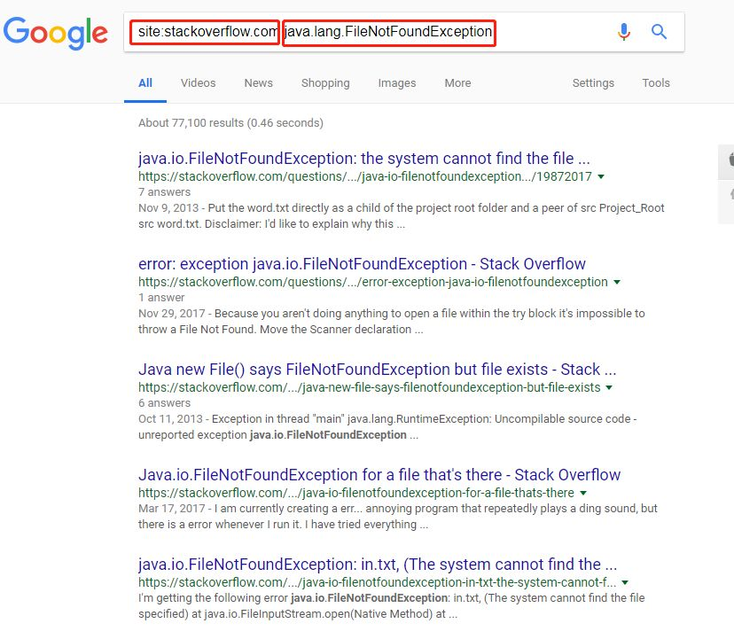
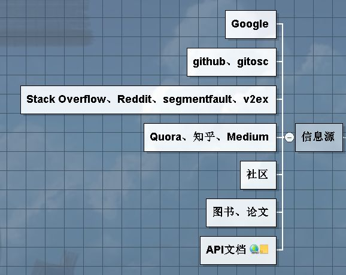
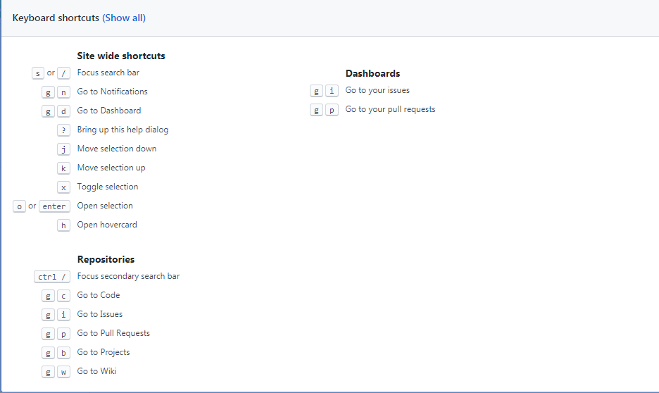
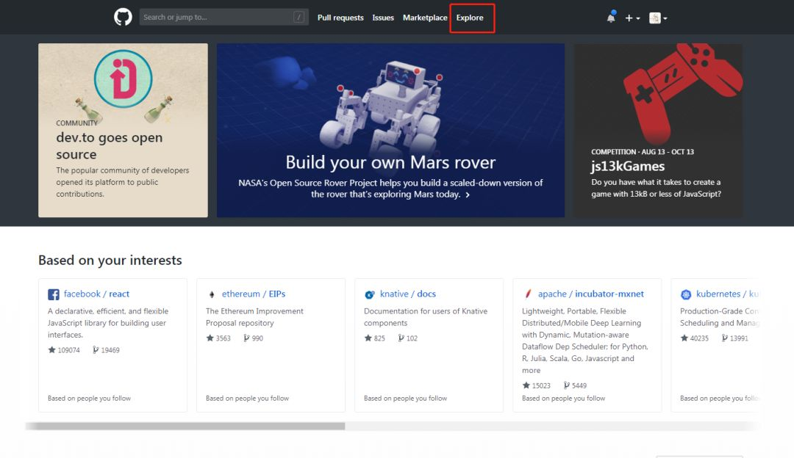
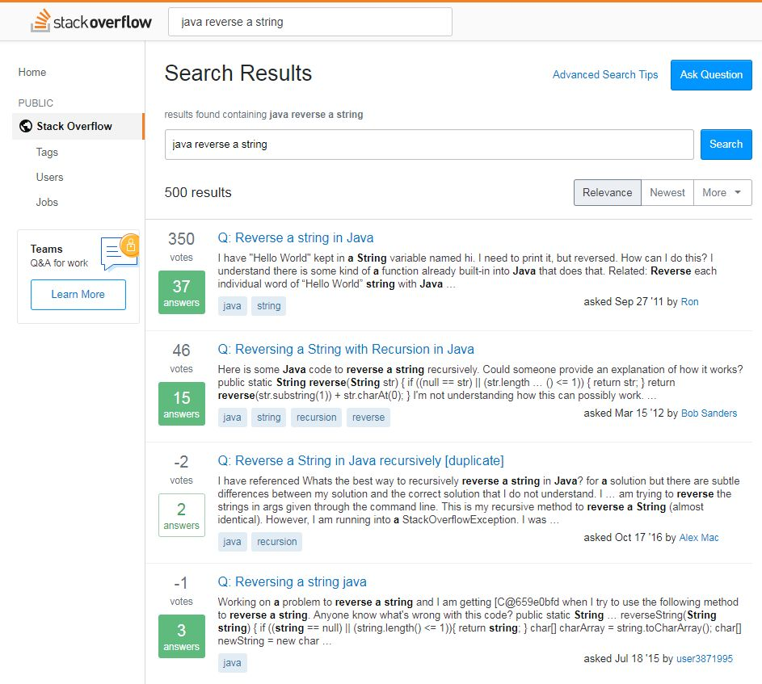
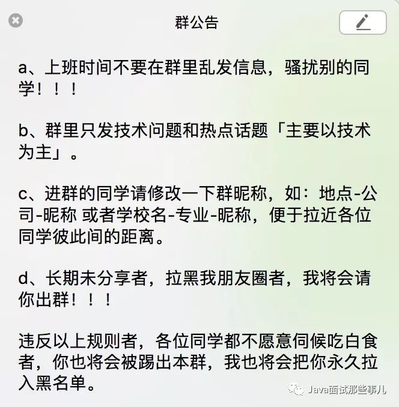

这三个网站的使用技巧，你值得收藏。。。
最近，微信群里有小伙伴叫我分享几个自己经常访问的技术网站，就在这篇文章给大家总结一下。
在我看来，最好的工具还是谷歌，没有它搜不到的，基本上你遇到的技术问题， 90% 的它都能解决。在我接触互联网的时候，经常流行着这句话『外事问谷歌，内事问百度，房事问天涯，性事问猫扑』，而如今的天涯和猫扑已经失去当前的风光。
如果你是我公众号的老读者，一定还记得我之前写的关于谷歌搜索引擎语法的入门文章，见《Google应该这样玩，你知道这些技巧吗？》。说实话这篇文章确实简单，但是要学会怎么组合，以及怎么选择关键字，还得需要你花一些功夫去研究呢。

上图只是一个简单的组合来查找一个异常问题，还有很多高级的组合技巧，你可以读一下《Google Hacking》这本参考书。
我记得有的读者来问我怎么读这本书，我的回答是『你只需把它当作一本工具手册，用到的时候再查，记住我上面那篇文章中的单个语法就好』。
下面我提到的这些网站的使用技巧，你通过谷歌的搜索语法一样也能搜到。
好了，言归正传，作为程序员的你，应该知道的网站有那些呢？见下图。

我个人认为，程序员必须会用 Google、Github 以及 StackOverflow 这三个网站，没有为什么，只是希望你的逼格能够高一点点。
对于各位读者来说，Github 就是一块大大的矿区，里面富含丰富的矿物资源。我相信大多数的读者都是在搜索框输入关键字再敲回车查找，那有没有我们不知道的技巧呢？
肯定是有的。就比如说快捷键吧，它真的还为我们提供了很多快捷键，来提高我们的搜索速度，怎么查看这些快捷键呢？在 Github 界面，按下 『shift+/』，就会弹出快捷键的窗口，里面提供了丰富的快捷键，来提高你的操作速度。

看到上面的这些快捷键，是不是突然觉得 Github 真的做得很人性化。除了这些Github 也为我们提供了不少搜索语法。
按编程语言搜索， xxx language:java
按文件或路径搜索，xxx in:readme
按文件大小搜索，xxx size:>100
按地域搜索， xxx location:chengdu
按是否fork过搜索，xxx fork:true
按照拥有者或者组织搜索，xxx user:yrzx404 或者 xxx org:github
按stars数量搜索，xxx stars:>1000
按主题搜索，xxx topic:java
等等等
这里只罗列了一些我常用的语法，如果你记不住这些语法，Github 同样为我们提供了高级搜索功能，见下图。
其实它除了搜索外，还给我们提供一个有趣的东西 Trending，如果你用过谷歌指数或者百度指数的话，那么这个东西也就不会陌生了，这个便是展示最近火的开源项目有哪些，在这里你可以看到各种不同开发语言的每天/周/月的最热门的 Repositories 和 Developers，见下图。

最后，来聊一下程序员的互答平台 Stack Overflow，这个网站好处在于是以问题为中心，不像知乎、Quora这些以人为中心的问答平台。
首先，使用它有一个前提『你必须要会一点英语』。
其次，要精准定位你的问题，其实对于大多数人来说，定位问题很困难，我分享一点小技巧给各位读者，也是我的「三问法」法则。
什么编程语言？
干什么事？
报什么错？
最后，将你的关键字组合放在搜索框，一般来说，这种方式定位后的答案最准确，见下图。

还是那句话，多实践多分享，技术的乐趣在于分享。这次的分享到此结束了，如果这篇文章对你有帮助的话，记得点赞和转发。
最后，打一个小广告，我建了一个微信群，群规非常严格，在这个群里你得要懂得分享，我会不定期清理群，目前已经踢了不少吃白食的！

要想进群学习分享经验的话，请读一下上面的群规，看看自己适不适合，如果觉得自己是一个乐于分享的人，便可以加我微信 lamb978 入群，备注「加群」。
参考
https://help.github.com/categories/searching-for-information-on-github
https://github.com/search/advanced
http://stackoverflow.com
—————END—————
看更多技术好文
请长按下方图片扫码关注